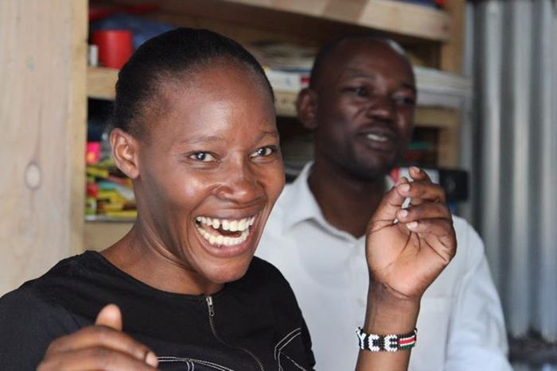
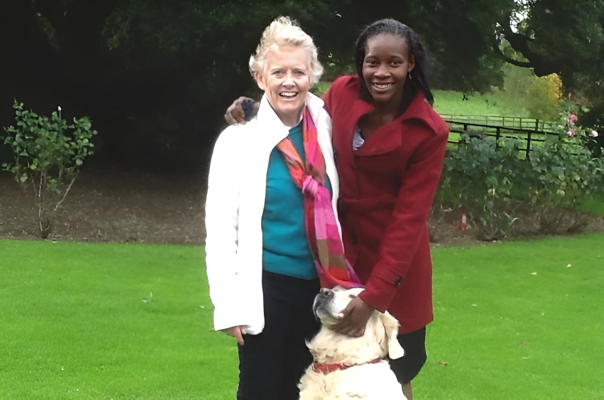

Our Story
Two lives,
one shared vision.
How a young Kenyan woman who fought her own way to an education, and a retired headteacher from a historic British school, join forces to build a
future for 525 children.

Mageta Island, 1986 · Nairobi, 2016
Joyce's story.
Joyce Aruga was born in 1986 on Mageta Island in Lake Victoria, the youngest of eleven children and the only one to attend school. At fourteen, her family told her she would be married to a much older man.
She ran away to Nairobi, found work as a maid, and used every shilling she earned to fight her way through secondary school and teacher training. The journey she had to make for her own education became the work of her life: making sure no child in her care would have to fight that hard for theirs.
BBC 100 Women Conference · London
The day they met.
The story of Rossholme in Kenya begins in November 2013 when the BBC World Service launched its first list of 100 inspiring and influential women from around the world - the BBC 100 Women. Joyce had been invited to London. Having escaped a child marriage, she had managed to secure sponsorship to do her teacher training in Nairobi, a long held ambition. It was at this conference that she met Judith Webb, a retired headteacher and a pioneering woman in the British military, who was there too.
Judy, was the former Headmistress of an all girls’ boarding school called Rossholme in the UK county of Somerset. Before taking on this role, Judy had a pioneering career in the
British Army which is why she was on the list. At the end of the conference, Judy invited Joyce to visit Rossholme in Somerset. It had closed as a school in 2005 but the family still
lived in the building and there were plenty of school uniforms packed up in the cellar. Joyce had always dreamed of opening her own school. They got talking. By the end of the
afternoon, the idea of a charity to back Joyce's
vision had begun.
Judy gave her the uniforms and Joyce undertook to open a new Rossholme School, this one in Kenya. In 2016, she opened the doors of Rossholme in Kenya in a small building in the Kiambiu slum area of Nairobi with just 6 pupils from 2-6, wearing their striking navy blue and yellow uniforms. It has been growing ever since and now has 525 pupils from 3-12, all wearing the same uniform.

Weston-super-Mare, 1888 - 2005
The original Rossholme.
Rossholme School was founded as a girls' independent school in 1888 in Weston super Mare. It moved out to the Vicarage, in East Brent, a small village situated 7 miles from Weston super Mare on a temporary basis in 1940 to avoid the disruption of the German bombing. The original White House building on Beach Road, Weston super Mare, took a direct hit two weeks later and was completely demolished.
Rossholme School therefore stayed in its 'temporary' home in East Brent until it closed in 2005. Despite the many improvements and expansions which took place over the years, including the building of The Clocktower in 2003, the school could only accommodate a maximum of 125 pupils. Its beautiful location at the foot of Brent Knoll provided a wonderful environment for learning, sport, drama and many other activities, but the limitations of space meant that the school was not viable in the long term.
Former headmistress Judith Webb had herself been brought up at Rossholme from 1956, when her mother Mrs EM Griggs became headmistress. Judith took from her mother in 1986 and now supports the charity Rossholme School in Kenya, a school for children aged 3 -12 yrs run by Joyce Aruga in one of the poorest parts of Nairobi.
Be part of the
next chapter.
Joyce and Judith's partnership has built a sanctuary for 525 children. Your support keeps it open.
Love shopping online?
You can support us at the same time for free. Just sign up to easyfundraising.
Every time you shop with your
favourite retailers, they'll donate to us - not you.